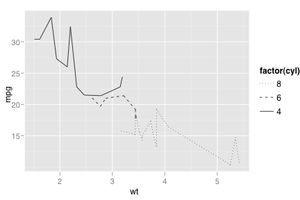
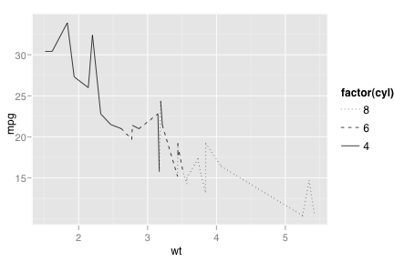

scale_linetype
Create a scale for categorical line types
Details
Examples
> qplot(wt, mpg, data=mtcars, geom="line", linetype=factor(cyl))  > > # Force all points to be connected together > qplot(wt, mpg, data=mtcars, geom="line", linetype=factor(cyl), group=1)  > > # The linetype scale currently has no options, so there's > # no point in adding it manually